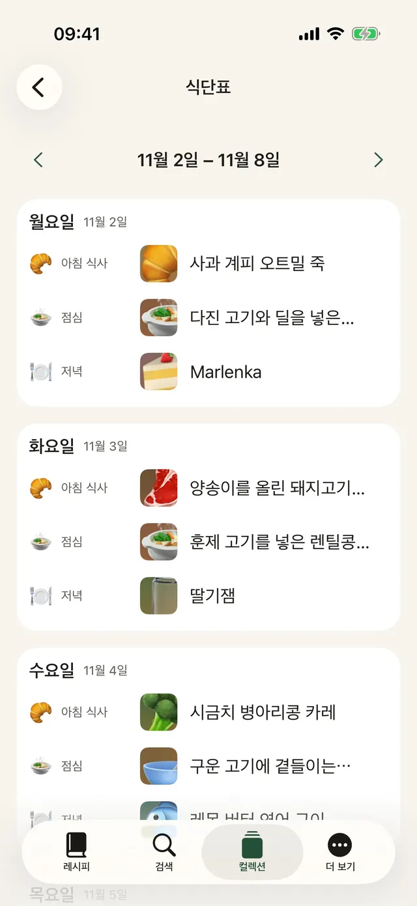
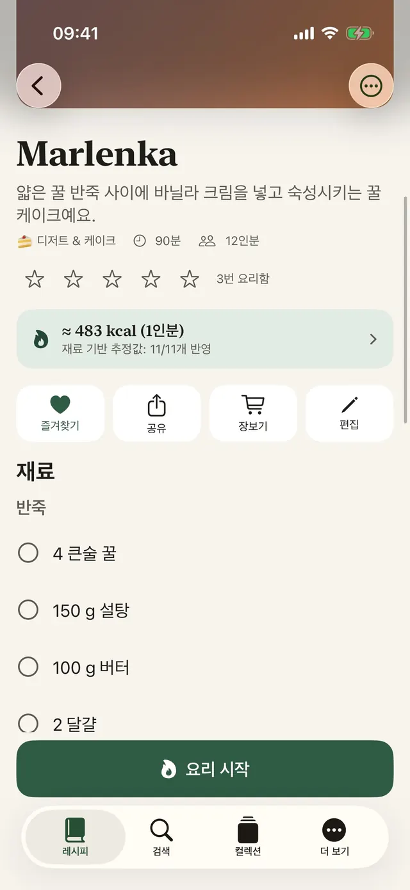
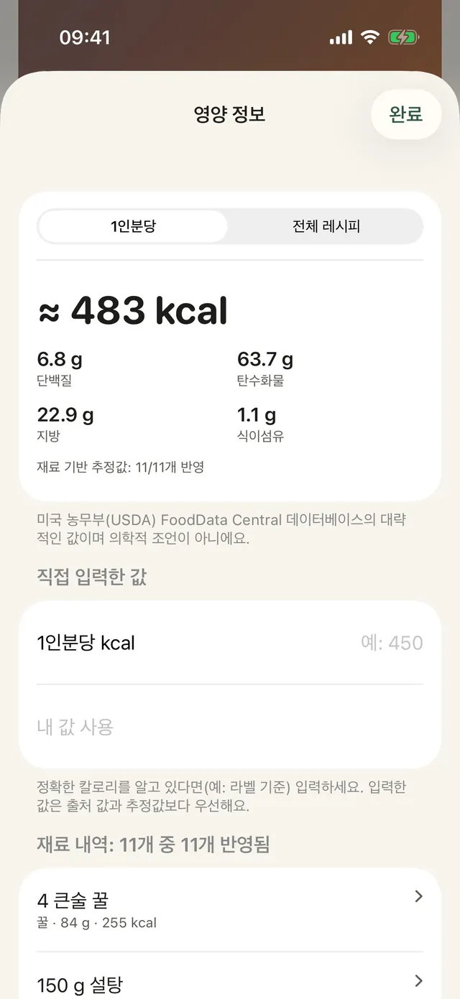
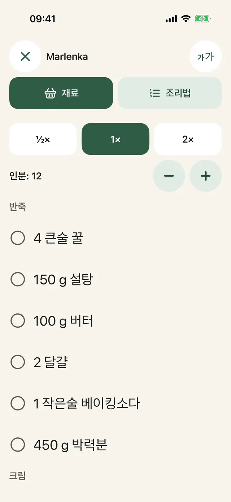
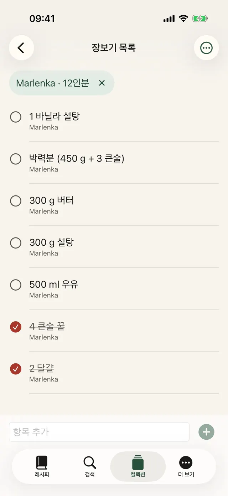
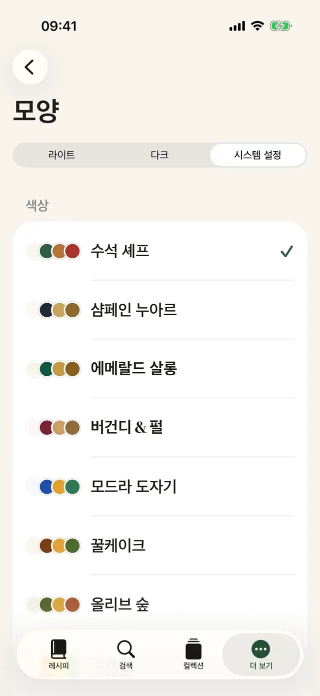
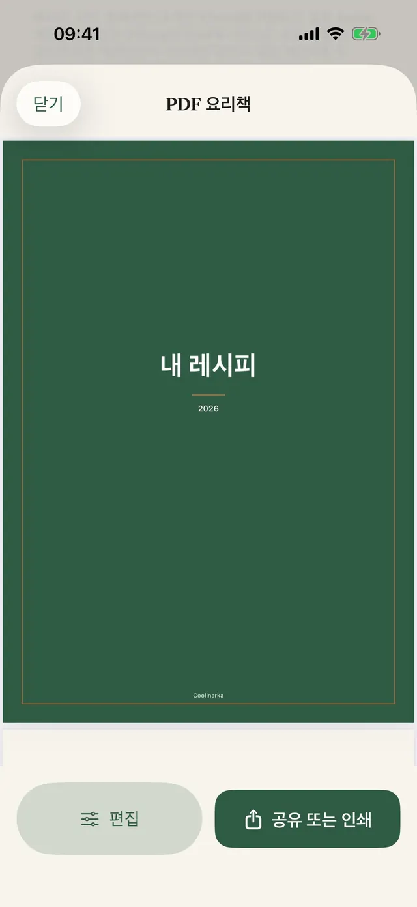
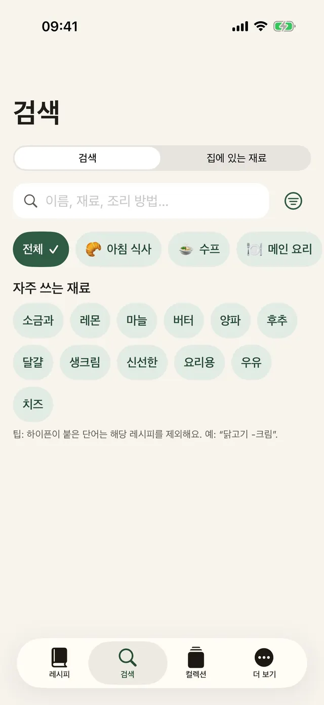
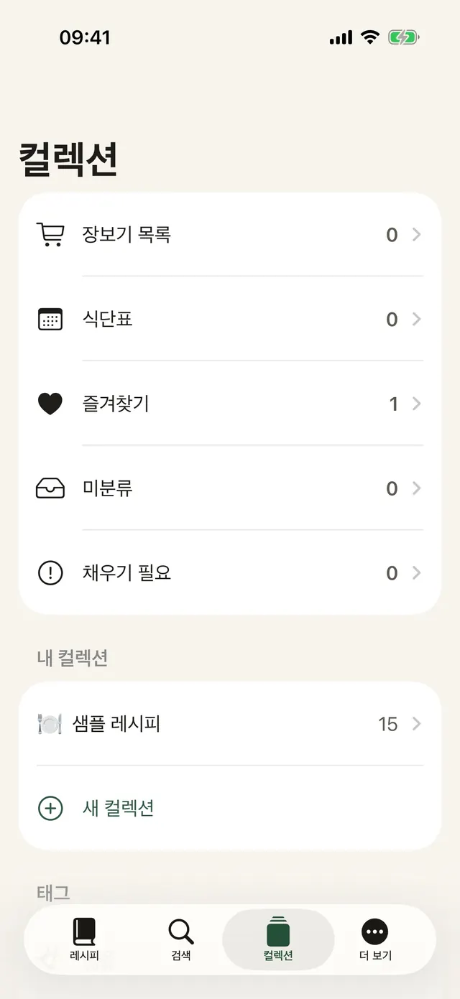

탭 한 번으로 저장
Instagram, Facebook, Safari에서 공유를 누르고 Coolinarka를 선택하세요.
Instagram, Facebook, 웹, 영상에서 레시피를 저장해 보세요. Coolinarka가 재료와 조리 단계를 깔끔하게 정리하고, 요리할 때는 한 단계씩 안내해 드려요.
iPhone과 iPad용, 무료예요. Android 버전은 곧 Google Play에 나와요.

SNS 게시물 속 레시피는 이런 모습이에요. 한 번만 탭하면 깔끔하게 정리되고, 인분도 바로 다시 계산할 수 있어요.
😍😍 브로콜리 크림 펜네!!! 400 g 펜네, 1 브로콜리, 250 ml 요리용 생크림, 2 쪽 마늘, 50 g 파르메산 치즈, 소금과 후추 ... 펜네를 포장지에 적힌 대로 삶고, 마지막 4분 동안 브로콜리 송이를 함께 넣어요. 기름에 마늘을 살짝 볶고 생크림을 부어 데워요. 물기를 뺀 파스타와 브로콜리를 소스에 섞고 파르메산 치즈를 뿌려요. 🔥🔥 #브로콜리 #food
아이들도 좋아하는 간단한 파스타예요.
앱에 들어 있는 샘플 레시피예요. 실제 게시물은 이보다 더 뒤죽박죽일 때가 많지만, Coolinarka는 스크린샷이나 영상에서도 잘 정리해요.
큰 글씨, 화면에는 한 단계만, 디스플레이는 꺼지지 않아요. 손에 밀가루가 묻어 있어도 탭 한 번이면 타이머가 시작돼요.
이 미리보기에서는 타이머가 빠르게 흘러가요.
펜네를 포장지에 적힌 대로 삶고, 마지막 4분 동안 브로콜리 송이를 함께 넣어요.
여러 레시피의 재료가 하나로 합쳐져요. 국가를 바꾸면, 레시피가 다른 언어로 되어 있어도 검색어가 상점 언어로 바뀌는 걸 볼 수 있어요.
장바구니에는 상점에서 직접 담아요. 앱은 상점에 있는 사용자 계정에 접근할 수 없어요. 이용 가능 여부는 주소에 따라 달라요.
미국에서 아메리칸 도그를 찾는 한국인, 해외 식당에서 서비스를 외치는 한국인. 외국 상점에서는 작은 말실수 하나로 장바구니에 엉뚱한 게 담겨요. Coolinarka는 상점 언어로 검색해서 이런 일이 생기지 않게 도와요. 나라면 뭘 들고 오게 될지, 한번 맞혀 볼까요?
아이콘까지 달라지는 9가지 테마, 다크 모드, 큰 글씨. 하나 골라 보세요. 앱처럼 이 페이지 전체가 바뀌어요.
실제 화면이에요. 지금 읽고 있는 언어 그대로요.









Instagram, Facebook, Safari에서 공유를 누르고 Coolinarka를 선택하세요.
영상이나 화면 녹화가 레시피가 돼요. 음성은 휴대폰 안에서 바로 받아 적어요.
한 주를 계획하고, 빈칸은 즐겨찾기에서 채운 뒤, 전부 장보기 목록으로 보내세요.
식사 유형, 태그, 즐겨찾기, 나만의 컬렉션.
이름, 재료, 조리법으로 찾아요. 발음 구별 기호는 신경 쓰지 않아도 돼요.
홈 화면과 잠금 화면의 ‘오늘 뭐 만들까’ 위젯, 그리고 Siri: “Coolinarka에서 뭘 만들까”.
받는 사람은 Coolinarka에서 사진까지 함께 열 수 있어요. 내 평점과 메모는 들어가지 않아요.
자르기, 회전, 필터.
같은 Apple 계정을 쓰는 기기끼리 iCloud로 레시피가 동기화돼요.
컬렉션을 백업하거나 다른 앱으로 옮기세요.
샘플 레시피와 칼로리 추정치까지 포함해요.
앱에는 계정도, 광고도, 추적도 없어요. 레시피는 내 기기와 내 개인 iCloud에 남아 있고, 개발자는 접근할 수 없어요.
레시피, 가져오기, 내보내기, 백업, iCloud, 요리 모드는 비용이 들지 않아요. Plus는 구독 없는 1회 구입이고 가족과 공유할 수 있어요.
수치는 참고용이며 의학적 조언이 아니에요. 계산은 기기 안에서 이뤄져요.
Coolinarka를 다운로드하고 오늘 첫 레시피를 저장해 보세요.
iPhone과 iPad용, 무료예요. Android 버전은 곧 Google Play에 나와요.